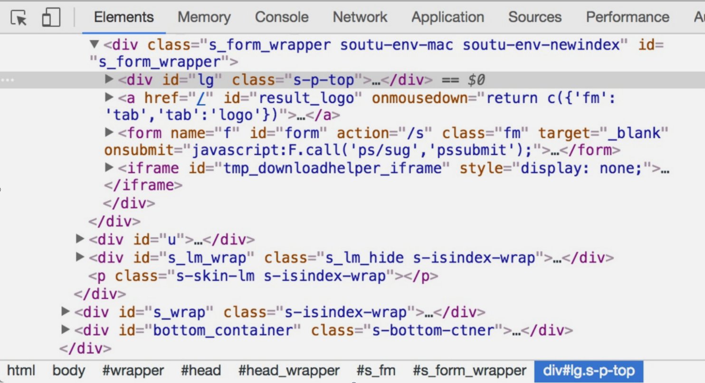

网页的组成
首先，我们来了解网页的基本组成，网页可以分为三大部分：HTML、CSS和JavaScript。 如果把网页比作一个人的话，HTML相当于骨架，JavaScript相当于肌肉，CSS相当于皮肤，三者结合起来才能形成一个完整的网页。下面我们来分别介绍一下这三部分的功能。
HTML
HTML是用来描述网页的一种语言，其全称叫作Hyper Text Markup Language，即超文本标记语言。
我们浏览的网页包括文字、按钮、图片和视频等各种复杂的元素，其基础架构就是HTML。不同类型的元素通过不同类型的标签来表示，如图片用img标签表示，视频用video标签表示，段落用p标签表示，它们之间的布局又常通过布局标签div嵌套组合而成，各种标签通过不同的排列和嵌套就可以形成网页的框架。
在Chrome浏览器中打开百度，右击并选择 “检查”项（或按F12键），打开开发者模式，这时在Elements选项卡中即可看到网页的源代码，如图所示。

这就是HTML，整个网页就是由各种标签嵌套组合而成的。这些标签定义的节点元素相互嵌套和组合形成了复杂的层次关系，就形成了网页的架构。
CSS
虽然HTML定义了网页的结构，但是只有HTML页面的布局并不美观，可能只是简单的节点元素的排列，为了让网页看起来更好看一些，这里就需要借助CSS了。
CSS，全称叫作Cascading Style Sheets，即层叠样式表。“层叠”是指当在HTML中引用了数个样式文件，并且样式发生冲突时，浏览器能依据层叠顺序处理。“样式”指网页中文字大小、颜色、元素间距、排列等 格式。
CSS是目前唯一的网页页面排版样式标准，有了它的帮助，页面才会变得更为美观。例如：
1 | #head_wrapper.s-ps-islite .s-p-top { |
这就是一个CSS样式。大括号前面是一个CSS选择器。此选择器的作用是首先选中id为head_wrapper且class 为s-ps-islite的节点，然后再选中其内部的class为s-p-top的节点。大括号内部写的就是一条条样式规则，例如position指定了这个元素的布局方式为绝对布局，bottom指定元素的下边距为40像素，width指定了宽度为100%占满父元素，height则指定了元素的高度。也就是说，我们将位置、宽度、高度等样式配置统一写成这样的形式，然后用大括号括起来，接着在开头再加上CSS选择器，这就代表这个样式对CSS选择器选中的元素生效，元素就会根据此样式来展示了。
在网页中，一般会统一定义整个网页的样式规则，并写入CSS文件中（其后缀为css）。在HTML中，只需要用link标签即可引入写好的CSS文件，这样整个页面就会变得美观、优雅。
JavaScript
JavaScript，简称JS，是一种脚本语言。HTML和CSS配合使用，提供给用户的只是一种静态信息，缺乏交互性。我们在网页里可能会看到一些交互和动画效果，如下载进度条、提示框、轮播图等，这通常就是JavaScript的功劳。它的出现使得用户与信息之间不只是一种浏览与显示的关系，而是实现了一种实时、动态、交互的页面功能。
JavaScript通常也是以单独的文件形式加载的，后缀为js，在 HTML中通过script标签即可引入，例如:
1 | <script src="jquery-2.1.0.js"></script> |
综上所述，HTML定义了网页的内容和结构，CSS描述了网页的布局，JavaScript定义了网页的行为。